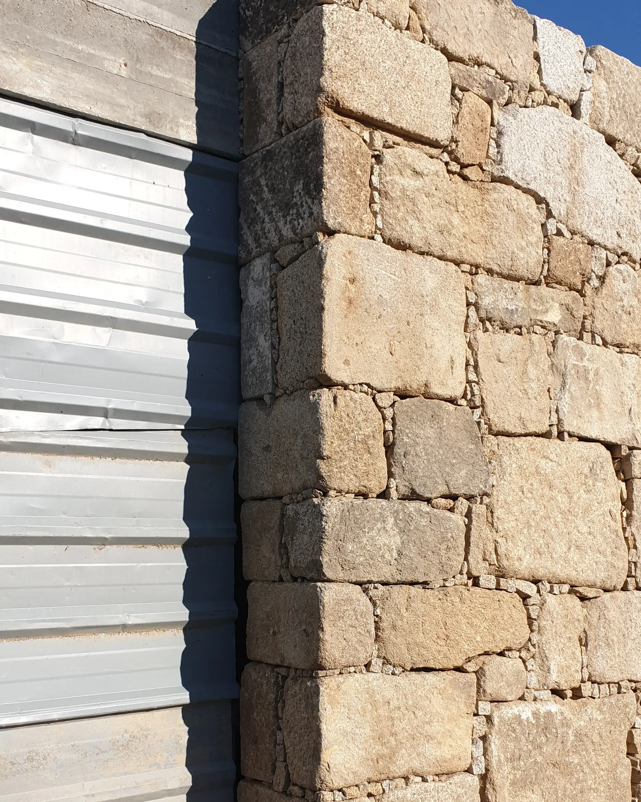
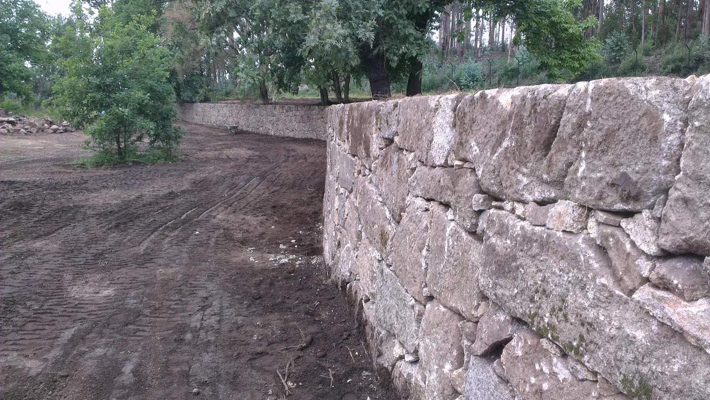
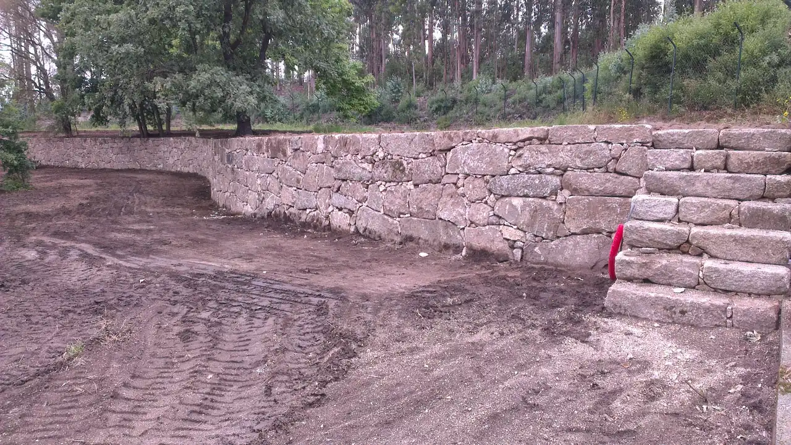

Atelier · Pedra, detalhe e execução

Pedidos de orçamento, fotografias e manutenção do site.
Uma referência prática para o trabalho de todos os dias.
Uma referência para Carlos
O site apresenta os trabalhos da SOLRAC e permite iniciar uma conversa sobre uma obra. O Concierge é o formulário de contacto: recolhe a informação necessária para uma primeira avaliação.
O visitante pode explorar o portefólio, abrir as fotografias de cada obra e consultar o site em português, inglês ou espanhol.
O formulário reúne nome, email, local da obra e os restantes dados preenchidos. O visitante pode juntar até quatro fotografias.
Quando o serviço de receção está ativo, o pedido fica guardado com uma referência. Carlos analisa a informação recebida e contacta o interessado para esclarecer o próximo passo.
A consulta é feita no computador ou servidor que guarda os registos, através de uma ferramenta local. O site atual não inclui uma área de gestão com início de sessão nem envia alertas automáticos por email. A operação técnica está descrita na página 6.
Uma rotina simples
No início de cada dia útil, consulte os novos pedidos ou peça uma exportação a quem acompanha a manutenção. Guarde a referência em toda a correspondência sobre a mesma obra.
Analisa os pedidos, esclarece o trabalho pretendido, combina uma visita quando necessário e prepara a proposta.
Consulta os registos locais, disponibiliza a lista e as fotografias a Carlos e acompanha o funcionamento do serviço.
Confirme o nome, o contacto, o local da obra e a referência. Leia a descrição e veja se existem fotografias antes de responder.
Peça as medidas, os acessos, o prazo pretendido ou as imagens necessárias. Quando a avaliação o exigir, proponha uma visita antes de fechar o orçamento.
Anote a data da resposta e o que ficou combinado: informação em falta, visita ou envio da proposta. Use uma lista de acompanhamento própria ou a conversa com o cliente.
Objetivo recomendado para a primeira resposta.
Confirme a receção, mesmo que a análise ainda esteja em curso. Use WhatsApp se houver número disponível; caso contrário, responda por email.
Olá, [nome]. Obrigado pelo contacto com a SOLRAC. Recebemos o seu pedido [referência]. Para avançarmos, precisamos de [informação]. Voltamos a falar até [dia/hora].
Informação que ajuda a avaliar
Uma imagem geral mostra o contexto; uma imagem próxima ajuda a observar a pedra, as juntas e os remates. As fotografias apoiam a primeira conversa e não substituem uma visita quando necessária.

01 / Pormenor do aparelho

02 / Vista de conjunto
Pedido recebido: o serviço confirmou o registo. As fotografias aceites ficam associadas à referência.
Pedido por enviar: o site não confirmou a receção. O visitante deve abrir email ou WhatsApp e concluir o envio nessa aplicação. As fotografias têm de ser anexadas manualmente.
A ferramenta local indica os caminhos dos ficheiros de imagem. As fotografias recebidas não ficam expostas numa galeria pública do site.
Cuidar do que se apresenta
Reveja o site uma vez por mês e sempre que mudarem os contactos ou os serviços. Para uma atualização, reúna os textos finais e as fotografias antes de os entregar à pessoa responsável pela manutenção.
| Situação | O que fazer |
|---|---|
| Um pedido não aparece | Peça a referência e a hora aproximada. Verifique se o envio foi confirmado no site ou concluído por email/WhatsApp; peça à manutenção que procure o registo. |
| Faltam fotografias | Confirme se foram anexadas. No envio manual por email ou WhatsApp, peça ao cliente que junte os ficheiros na própria aplicação. |
| Um contacto ou uma imagem está errado | Envie à manutenção a página, uma captura do problema e o texto ou ficheiro correto. |
Confirme os contactos reais, quem consulta os pedidos e como chegam a Carlos. Faça um envio de teste no endereço publicado. Este guia descreve a utilização; a verificação final da instalação deve acompanhar a entrega do site.
Referência de operação local
Para quem acompanha a instalação. Execute estes comandos na pasta do projeto, no computador ou servidor que recebe os pedidos. A ferramenta usa Python 3 e não exige pacotes adicionais.
python3 scripts/leads.py --list
Mostra referência, data, nome, email, tipo de intervenção e local. Uma lista vazia não comprova que o serviço publicado está a receber pedidos.
python3 scripts/leads.py --export-csv ~/pedidos-solrac.csv python3 scripts/leads.py --export-json ~/pedidos-solrac.json
O CSV inclui contactos e descrição. O JSON mantém também a informação das fotografias; nenhum dos formatos inclui os ficheiros de imagem.
python3 scripts/leads.py --show-photos
Abra os caminhos apresentados no sistema de ficheiros. Se aparecer «ficheiro em falta», verifique o armazenamento antes de dar o pedido por completo.
python3 scripts/leads.py --file /copia/data/inquiries.jsonl --list
Substitua o caminho pelo da cópia. Para consultar imagens, preserve a pasta photos/ ao lado de inquiries.jsonl.
Guarde em conjunto data/inquiries.jsonl e data/photos/, num local reservado. Os dados recebidos e as imagens não são incluídos no Git. Restrinja o acesso às exportações e às cópias de segurança.
make serve inicia o serviço em http://localhost:8080. Um alojamento apenas estático não executa a receção nem guarda pedidos.
Confirme email e WhatsApp reais na configuração, o serviço de receção no endereço publicado e o acesso reservado aos dados. O registo não gera notificações automáticas.